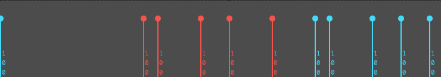
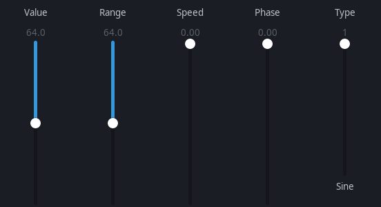

Event button selects which event type is displayed/edited.
The event strip adds/selects/moves MIDI events (non note on/off), similar to the piano grid.
The data editor under the strip changes velocities, channel pressure, CC values, patch select, etc.
Left click + drag draws a line; values follow the line.
If no events are selected, all events match the draw line.
If events are selected, only selected events change.
Data Editor

LFO Editor

LFO button opens an LFO editor window.
Hover sliders for tooltips.
If no events are selected, all events are adjusted; otherwise only selected events change.
Additional controls
Background Sequence: draw another sequence behind (dark green) as a reference.
Sequence dump: mute/unmute the sequence in live play.
Pass thru: send MIDI in to MIDI out.
Recording: add incoming MIDI to the sequence.
Quantize: grid-snap incoming MIDI recording.
Merge MIDI recording types
Legacy merged looped: notes added upon looping.
Overwrite looped record: clear notes on each loop after first note; overwrite previous pass.
Expand sequence length to fit recording: sequence does not loop; expands after reaching last 1/4 measure.
Expand and replace: expand and replace previous events on the sequence.
MIDI record supports simultaneous multi-sequence record, channel specific, up to 16 channels at once.
MIDI step edit
Step edit is available when recording and seq42 is not playing, starting at the transport line.
Ctrl+Right and Ctrl+Left move transport line by snap.